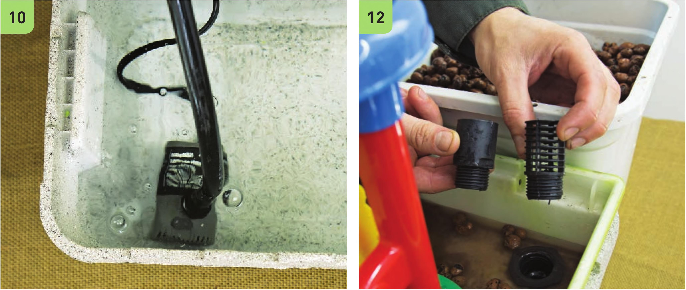

9 Fill the reservoir with water. 10 Position the pump at the bottom of the reservoir and place the grow bed over the reservoir. 11 Plug in the pump to test the irrigation system. Check that the grow bed does not overflow and the drain fitting is working properly. 12 Fill the grow bed with pre-rinsed expanded clay pellets. The water should not flood higher than the surface of the grow bed, so the clay pellets should cover the screen of the drain fitting. This grow bed was shallower than I originally thought, so I ended up removing the riser on the drain fitting so the drain fitting would be submerged under the clay pellets. 13 At this point the media bed is operational. Simply amend the reservoir with fertilizer and plant. The following additions are purely for aesthetics and are not required for this garden to function properly. TIP Expanded clay pellets can be reused. Remove old plant roots after harvesting, and then sterilize the pellets with a mild bleach solution, hydrogen peroxide, isopropyl alcohol, or heat. Boiling clay pellets is a great way to sanitize them without using chemicals. Waterwheel Addition (Optional) Most of the decorations in this fairy garden are Legos and small toys. The only decoration that involved any major adjustment to the garden was the waterwheel. The following steps detail how to add a water line from the main irrigation line to power a waterwheel. 14 Use the irrigation hole punch to create a small hole in the Vi" vinyl tubing. 15 I nsert a VC double barbed connector into the Vi vinyl tubing. 16 Connect the W black vinyl tubing to the W double barbed connector. 17 Drill a VC hole in the funnel of the waterwheel using the step drill bit. 18 Remove the clay pellets from the grow bed so the base of the waterwheel is set on the bottom of the grow bed. Place the waterwheel in the middle of the grow bed. 19 String the W black vinyl tubing to the waterwheel. Insert the shutoff valve. 20 Secure the VC black vinyl tubing to the legs of the waterwheel with a zip tie. 96 DIY HYDROPONIC GARDENS
